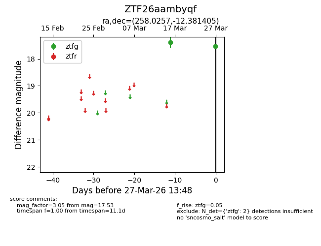
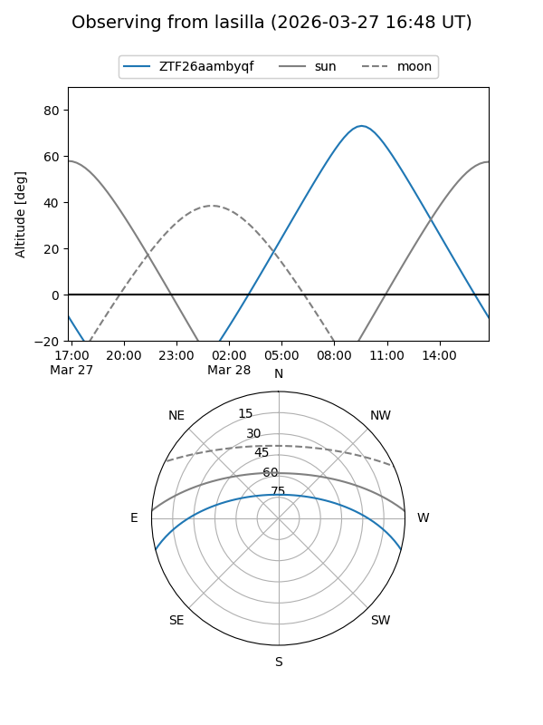
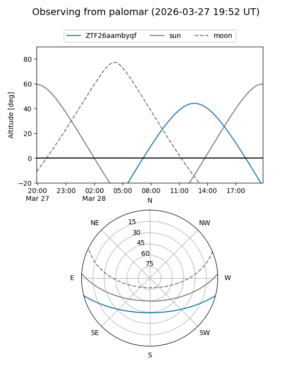

ZTF26aambyqf
Target ZTF26aambyqf at 2026-03-27 13:50
Aliases and brokers:
FINK: link
Lasair: link
ALeRCE: link
alt names
ZTF26aambyqf (ztf,fink_ztf)
Coordinates:
equatorial (ra, dec) = 258.0257,-12.38141
equatorial (HMS+DMS) = 17:12:06.17,-12:22:53.06
galactic (l, b) = (9.8433,+15.50476)
Flags:
Photometry:
last ztfg=17.53
2 ztfg detections
Lightcurve

Visibility


Additional plots